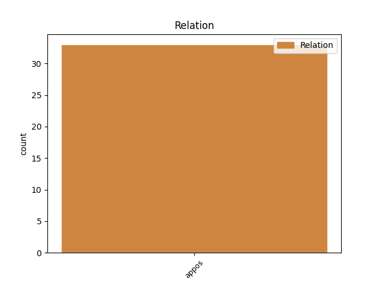
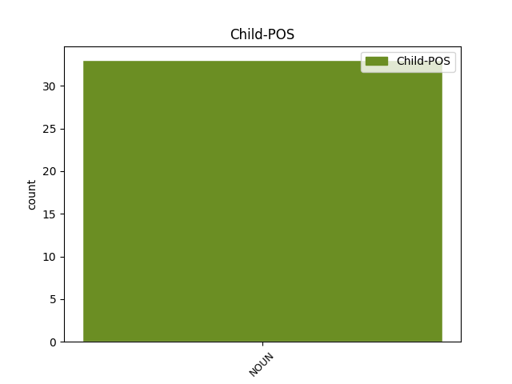

Distribution of features within this leaf


Agreement Rules sorted by frequency.
- When the dependent token is the appositional modifier(appos) of the head token, and the head token is NOUN and the dependent token is NOUN.
1 te _ _ _ _ 0 _ _ _
2 proge proga NOUN Ncfpn Case=Nom|Gender=Fem|Number=Plur 0 _ _ _
3 gor _ _ _ _ 0 _ _ _
4 recimo _ _ _ _ 0 _ _ _
5 eee _ _ _ _ 0 _ _ _
6 sedežnice sedežnica NOUN Ncfpn Case=Nom|Gender=Fem|Number=Plur 2 appos _ msd=Sozmi|word=sedežnice
7 vlečnice _ _ _ _ 0 _ _ _
8 pa _ _ _ _ 0 _ _ _
9 to _ _ _ _ 0 _ _ _
10 vse _ _ _ _ 0 _ _ _
11 je _ _ _ _ 0 _ _ _
12 recimo _ _ _ _ 0 _ _ _
13 šest _ _ _ _ 0 _ _ _
14 petnajst _ _ _ _ 0 _ _ _
15 trinajst _ _ _ _ 0 _ _ _
16 in _ _ _ _ 0 _ _ _
17 ob _ _ _ _ 0 _ _ _
18 in _ _ _ _ 0 _ _ _
19 proga _ _ _ _ 0 _ _ _
20 je _ _ _ _ 0 _ _ _
21 recimo _ _ _ _ 0 _ _ _
22 rdeča _ _ _ _ 0 _ _ _
23 narisana _ _ _ _ 0 _ _ _
24 pač _ _ _ _ 0 _ _ _
25 rdeča _ _ _ _ 0 _ _ _
26 srednje _ _ _ _ 0 _ _ _
27 težka _ _ _ _ 0 _ _ _
28 ali _ _ _ _ 0 _ _ _
29 pa _ _ _ _ 0 _ _ _
30 modra _ _ _ _ 0 _ _ _
31 pa _ _ _ _ 0 _ _ _
32 je _ _ _ _ 0 _ _ _
33 številka _ _ _ _ 0 _ _ _
34 sedem _ _ _ _ 0 _ _ _
35 ali _ _ _ _ 0 _ _ _
36 pa _ _ _ _ 0 _ _ _
37 ta _ _ _ _ 0 _ _ _
38 je _ _ _ _ 0 _ _ _
39 devet _ _ _ _ 0 _ _ _
40 ali _ _ _ _ 0 _ _ _
41 pa _ _ _ _ 0 _ _ _
42 ne _ _ _ _ 0 _ _ _
43 vem _ _ _ _ 0 _ _ _
44 koliko _ _ _ _ 0 _ _ _
Disagree Examples:
1 ker _ _ _ _ 0 _ _ _
2 sem _ _ _ _ 0 _ _ _
3 se _ _ _ _ 0 _ _ _
4 poročil _ _ _ _ 0 _ _ _
5 z _ _ _ _ 0 _ _ _
6 njeno _ _ _ _ 0 _ _ _
7 hčerko _ _ _ _ 0 _ _ _
8 in _ _ _ _ 0 _ _ _
9 imeli _ _ _ _ 0 _ _ _
10 smo _ _ _ _ 0 _ _ _
11 veliko _ _ _ _ 0 _ _ _
12 skupnih _ _ _ _ 0 _ _ _
13 interesov interes NOUN Ncmpg Case=Gen|Gender=Masc|Number=Plur 0 _ _ _
14 tudi _ _ _ _ 0 _ _ _
15 glasbo glasba NOUN Ncfsa Case=Acc|Gender=Fem|Number=Sing 13 appos _ msd=Sozet|word=glasbo
16 no _ _ _ _ 0 _ _ _
17 zato _ _ _ _ 0 _ _ _
18 sem _ _ _ _ 0 _ _ _
19 tudi _ _ _ _ 0 _ _ _
20 eee _ _ _ _ 0 _ _ _
21 za _ _ _ _ 0 _ _ _
22 konec _ _ _ _ 0 _ _ _
23 izbral _ _ _ _ 0 _ _ _
24 eno _ _ _ _ 0 _ _ _
25 skladbo _ _ _ _ 0 _ _ _
26 ki _ _ _ _ 0 _ _ _
27 jo _ _ _ _ 0 _ _ _
28 je _ _ _ _ 0 _ _ _
29 imela _ _ _ _ 0 _ _ _
30 zelo _ _ _ _ 0 _ _ _
31 rada _ _ _ _ 0 _ _ _
32 in _ _ _ _ 0 _ _ _
33 danes _ _ _ _ 0 _ _ _
34 bi _ _ _ _ 0 _ _ _
35 imela _ _ _ _ 0 _ _ _
36 rojstni _ _ _ _ 0 _ _ _
37 dan _ _ _ _ 0 _ _ _
1 anja _ _ _ _ 0 _ _ _
2 parson _ _ _ _ 0 _ _ _
3 torej _ _ _ _ 0 _ _ _
4 prva _ _ _ _ 0 _ _ _
5 smučarka _ _ _ _ 0 _ _ _
6 ki _ _ _ _ 0 _ _ _
7 je _ _ _ _ 0 _ _ _
8 ostala _ _ _ _ 0 _ _ _
9 danes _ _ _ _ 0 _ _ _
10 brez _ _ _ _ 0 _ _ _
11 uvrstitve _ _ _ _ 0 _ _ _
12 in _ _ _ _ 0 _ _ _
13 tako _ _ _ _ 0 _ _ _
14 je _ _ _ _ 0 _ _ _
15 morda _ _ _ _ 0 _ _ _
16 tudi _ _ _ _ 0 _ _ _
17 zapravila _ _ _ _ 0 _ _ _
18 tretje _ _ _ _ 0 _ _ _
19 mesto mesto NOUN Ncnsa Case=Acc|Gender=Neut|Number=Sing 0 _ _ _
20 bronasto _ _ _ _ 0 _ _ _
21 medaljo medalja NOUN Ncfsa Case=Acc|Gender=Fem|Number=Sing 19 appos _ msd=Sozet|word=medaljo
22 v _ _ _ _ 0 _ _ _
23 skupnem _ _ _ _ 0 _ _ _
24 seštevku _ _ _ _ 0 _ _ _
25 svetovnega _ _ _ _ 0 _ _ _
26 pokala _ _ _ _ 0 _ _ _
27 kajti _ _ _ _ 0 _ _ _
28 kathrin _ _ _ _ 0 _ _ _
29 zettel _ _ _ _ 0 _ _ _
30 zaostaja _ _ _ _ 0 _ _ _
31 petinštirideset _ _ _ _ 0 _ _ _
32 točk _ _ _ _ 0 _ _ _
33 za _ _ _ _ 0 _ _ _
34 parsonovo _ _ _ _ 0 _ _ _
1 tu _ _ _ _ 0 _ _ _
2 imamo _ _ _ _ 0 _ _ _
3 tudi _ _ _ _ 0 _ _ _
4 graf _ _ _ _ 0 _ _ _
5 kjer _ _ _ _ 0 _ _ _
6 imamo _ _ _ _ 0 _ _ _
7 eee _ _ _ _ 0 _ _ _
8 prikazano _ _ _ _ 0 _ _ _
9 koliko _ _ _ _ 0 _ _ _
10 je _ _ _ _ 0 _ _ _
11 kakšno _ _ _ _ 0 _ _ _
12 je _ _ _ _ 0 _ _ _
13 to _ _ _ _ 0 _ _ _
14 razmerje razmerje NOUN Ncnsn Case=Nom|Gender=Neut|Number=Sing 0 _ _ _
15 zasebne _ _ _ _ 0 _ _ _
16 javne _ _ _ _ 0 _ _ _
17 univerze univerza NOUN Ncfpn Case=Nom|Gender=Fem|Number=Plur 14 appos _ msd=Sozmi|word=univerze
18 v _ _ _ _ 0 _ _ _
19 evropi _ _ _ _ 0 _ _ _
1 ne _ _ _ _ 0 _ _ _
2 ne _ _ _ _ 0 _ _ _
3 kadar _ _ _ _ 0 _ _ _
4 smo _ _ _ _ 0 _ _ _
5 v _ _ _ _ 0 _ _ _
6 stiski _ _ _ _ 0 _ _ _
7 predvsem _ _ _ _ 0 _ _ _
8 časovni _ _ _ _ 0 _ _ _
9 se _ _ _ _ 0 _ _ _
10 lahko _ _ _ _ 0 _ _ _
11 zatečemo _ _ _ _ 0 _ _ _
12 h _ _ _ _ 0 _ _ _
13 krompirjevi _ _ _ _ 0 _ _ _
14 bližnjici bližnjica NOUN Ncfsd Case=Dat|Gender=Fem|Number=Sing 0 _ _ _
15 krompirjevim _ _ _ _ 0 _ _ _
16 kosmičem kosmič NOUN Ncmpd Case=Dat|Gender=Masc|Number=Plur 14 appos _ msd=Sommd|word=kosmičem
1 [:voice] _ _ _ _ 0 _ _ _
2 samo _ _ _ _ 0 _ _ _
3 od _ _ _ _ 0 _ _ _
4 uze _ _ _ _ 0 _ _ _
5 [gap] _ _ _ _ 0 _ _ _
6 izobraževanja _ _ _ _ 0 _ _ _
7 samo _ _ _ _ 0 _ _ _
8 še _ _ _ _ 0 _ _ _
9 to _ _ _ _ 0 _ _ _
10 da _ _ _ _ 0 _ _ _
11 zdaj _ _ _ _ 0 _ _ _
12 je _ _ _ _ 0 _ _ _
13 pa _ _ _ _ 0 _ _ _
14 marec marec NOUN Ncmsn Case=Nom|Gender=Masc|Number=Sing 0 _ _ _
15 sredina sredina NOUN Ncfsn Case=Nom|Gender=Fem|Number=Sing 14 appos _ msd=Sozei|word=sredina
16 marca _ _ _ _ 0 _ _ _
17 in _ _ _ _ 0 _ _ _
18 mislim _ _ _ _ 0 _ _ _
19 da _ _ _ _ 0 _ _ _
20 moram _ _ _ _ 0 _ _ _
21 da _ _ _ _ 0 _ _ _
22 razen _ _ _ _ 0 _ _ _
23 datumov _ _ _ _ 0 _ _ _
24 za _ _ _ _ 0 _ _ _
25 junijsko _ _ _ _ 0 _ _ _
26 izobraževanje _ _ _ _ 0 _ _ _
27 nimamo _ _ _ _ 0 _ _ _
28 nič _ _ _ _ 0 _ _ _
29 drugega _ _ _ _ 0 _ _ _
30 še _ _ _ _ 0 _ _ _
31 in _ _ _ _ 0 _ _ _
32 da _ _ _ _ 0 _ _ _
33 je _ _ _ _ 0 _ _ _
34 zdaj _ _ _ _ 0 _ _ _
35 pač _ _ _ _ 0 _ _ _
36 čas _ _ _ _ 0 _ _ _
37 da _ _ _ _ 0 _ _ _
38 eem _ _ _ _ 0 _ _ _
39 pač _ _ _ _ 0 _ _ _
40 dorečemo _ _ _ _ 0 _ _ _
41 kaj _ _ _ _ 0 _ _ _
42 bomo _ _ _ _ 0 _ _ _
43 in _ _ _ _ 0 _ _ _
44 kako _ _ _ _ 0 _ _ _
45 bomo _ _ _ _ 0 _ _ _
46 a _ _ _ _ 0 _ _ _
47 ne _ _ _ _ 0 _ _ _